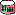
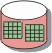

Artifacts >
Artifacts >
 Project Management Artifact Set >
Project Management Artifact Set >
 {More Project Management Artifacts} >
{More Project Management Artifacts} >

Project Measurements
 Artifacts >
Project Management Artifact Set >
{More Project Management Artifacts} >
Artifact:
| ||||||||||||
|
 Project Measurements |
The project measurements artifact is the project's active repository of metrics data. It contains the most current project, resources, process, and product measurements at the primitive and derived level. |
| Role: | Project Manager |
| More Information: | See Guidelines: Metrics |
| Input to Activities: | Output from Activities: |
The Project Measurements artifact provides the storage for the project's metrics data. It is kept current as measurements are made, or become, available. It also contains the derived metrics that are calculated from the primitive data and should also store information (procedures and algorithms, for example) about how the derived metrics are obtained. Reports on the status of the project, for example, progress towards goals (functionality, quality, and so on), expenditures, and other resource consumption, are produced using the project measurements (see Artifact: Status Assessment). More frequent, or even apparently continuous, displays of project status are possible using tools where automated software data collection agents feed real-time displays of project status.
The format and contents of the Project Measurements artifact depends on the metrics selected and the technology used for collection and storage. It is essentially a database of metric-value associations and allied information for their collection and calculation. Its form could be as simple as a set of files manually maintained by the Project Manager, but we recommend that the collection and storage be automated and, as far as possible, be made non-intrusive.
The Project Measurements artifact should be set up early in the Inception phase, and then kept current, so that reported status does not significantly lag behind the real status of the project. The actual frequency of updates will depend on the particular metric and the technology chosen. For example, effort data is often collected from a timesheet system, which typically presents data on a weekly cycle and also feeds a payroll system. It is certainly possible to capture effort data more frequently and separate its collection from the pay cycle, although this may require additional procedures or systems, which an organization may feel are not justified.
The Project Manager is responsible for ensuring that the Project Measurements are properly set up and then routinely updated. The Project Manager will use the Project Measurements when producing the Artifact: Status Assessment in the Activity: Report Status.
On smaller projects, project measurements may exist only as reports from the defect tracking system and a spreadsheet to track progress. On larger or more formal projects, there may be a large selection of metrics managed using one or more databases., This may be a distributed artifact, for example, the various metrics selected by the Project Manager may be produced by several different tools, with the collection and reporting task being a manual one. Here's another example: the project's progress may be reported from a project plan that is routinely updated by the Project Manager from status information supplied in spreadsheets by team members.
|
Rational Unified
Process
|